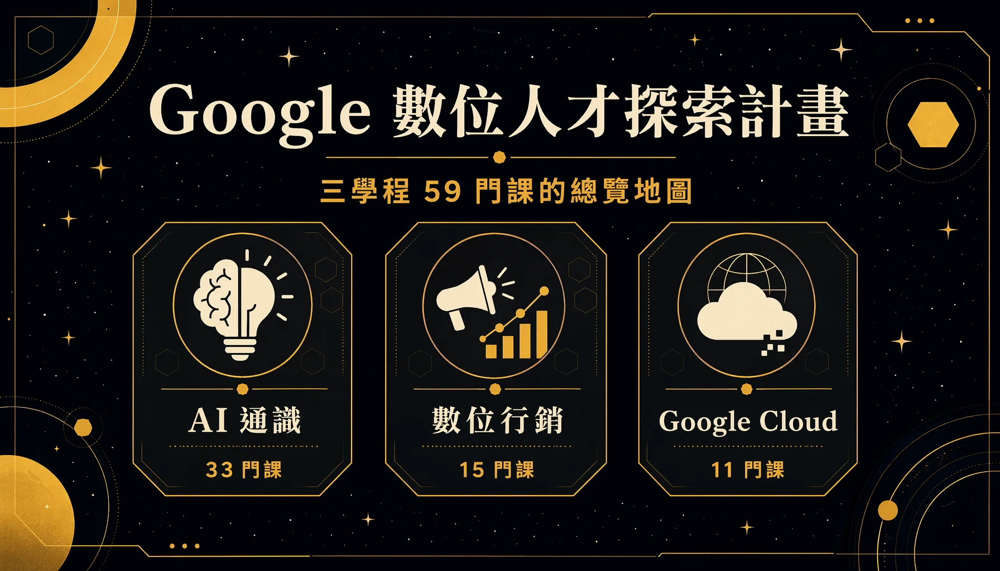

The "Google Digital Talent Exploration Program" is a free online learning program Google runs in Taiwan. Its courses split into three tracks — AI workplace literacy, digital marketing, and Google Cloud — 59 courses in total, hosted on the skills.google platform. I worked through all three tracks, turning every course into a systematic set of Traditional Chinese notes along the way. This entry is the map of the whole program, covering what gets taught, the registration and certification process, and the resources available. Three separate entries go into the detail of each track.

This program suits anyone wanting to fill in generative AI, cloud and digital marketing as one complete block. Most courses come from official Google material, delivered as short courses with a repeatable certification mechanism, at zero cost and on your own schedule. What follows: the three-track map first, then the registration entry point, the exam rules, and a few practical techniques that speed progress up considerably.
# What This Program Is
Google runs the program, aimed at developing digital talent in Taiwan by filling in three lines of capability at once: generative AI tools, cloud fundamentals, and digital marketing. The courses themselves sit on two Google learning platforms: most on skills.google (formerly Cloud Skills Boost), with a few marketing certifications on Skillshop. Registration, progress tracking and course notifications all run through the program's official LINE account.
The format is self-paced online study. Most courses are official Google material, in both Chinese and English; the English ones can be read alongside a translation tool. After finishing a track and passing the certification exam for each course, a notification arrives for the "capstone course," which is the final gate of the program.
# The Three-Track Map
The three tracks total 59 courses, counting courses that repeat across tracks — "Generative AI: Understanding the Fundamentals" for instance appears in all three. I wrote one entry per track to cover the detail:
| Track | Courses | What it covers |
|---|---|---|
| AI Workplace Literacy | 33 | Putting generative AI into daily work: from AI concepts, Gemini for Workspace and NotebookLM through to management-level scenarios, including 5 courses for the Gen AI Leader certification |
| Digital Marketing | 15 | Marketing with Gemini and NotebookLM: content generation, market and competitor research, customer insight, plus 5 Skillshop ads and analytics certifications |
| Google Cloud | 11 | Building an overall view of cloud and digital transformation: Cloud fundamentals, network security, data transformation, Vertex AI, operations and responsible AI |
- ● Track one in detail — AI Workplace Literacy (33 courses)
- ● Track two in detail — Digital Marketing (15 courses)
- ● Track three in detail — Google Cloud (11 courses)
# Registration and Entry Points
The main entry point is the official event page, which leads to registration and the course descriptions. After registering, course progress, starting a course and submitting certifications all happen through the program's official LINE account. The course platforms split across two sites: most courses on skills.google, with the ads and analytics certifications related to digital marketing on Skillshop. The program also runs an official LINE community where other participants share their study experience and techniques.
- Official event page — growonairtw.withgoogle.com/events/digitaleducation
- Course platforms — skills.google (most courses) plus Skillshop (some marketing certifications)
- Registration and certification submission — handled through the program's official LINE account; an official LINE community is also available
# Certification and Exam Rules
The program's assessments come in three layers, each with its own rules. Understanding them makes scheduling considerably easier:
- Apply what you learned (chapter quizzes) — the short quiz at the end of each chapter, repeatable without limit, there to confirm the material landed.
- Certification exams — the certification exam for each course, retakeable every 24 hours, so a fail means coming back the next day.
- Capstone course — once every course certification has been passed, a notification for the capstone arrives, and its assessment has to be taken within a week of completing the course. That assessment is repeatable without limit and carries no time pressure.
# A Few Techniques That Speed Progress Up
The program community has collected a few practical techniques. They genuinely saved time for me, so they are gathered here for reference:
- Stuck on a lab: search by GSP number — every hands-on Google Cloud lab carries a
GSPnumber. Searching something like "GSP207 lab solution" turns up the full procedure quickly. With time to spare, exploring it yourself works; under time pressure, this is the shortcut. - English courses with Immersive Translate — for reading English courses in Chinese, search for the "Immersive Translate" browser extension and read the whole page side by side.
- One-tap certification submission via official LINE — after passing a certification, submit it through the program's official LINE: roughly official LINE → bottom left → start learning → self-paced study → one-tap certification submission → pick the course you took → paste the certification URL or ID.
# The Study Notes I Built
While working through the courses, I turned every course in all three tracks into a systematic set of Traditional Chinese notes, in one consistent format: course outline → chapter guide → chapter-by-chapter key points → quick-reference cards → self-check. The notes are written strictly from the course material, converting English material into plain Chinese, with the focus held on what gets applied after finishing.
The three track entries are the condensed public version of those notes, laying out how each track's courses group together, the key points of each course, and the concepts most worth retaining. Alongside this program I also built a Chrome extension that lays out completion of all 59 courses across the three tracks on one page, which removes the chore of clicking into each page to count progress.